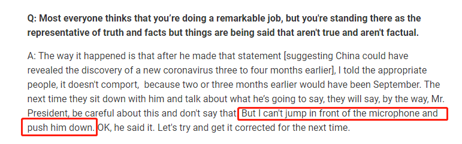
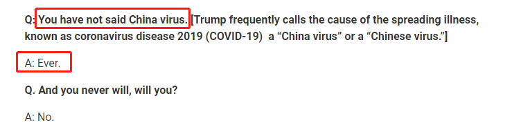
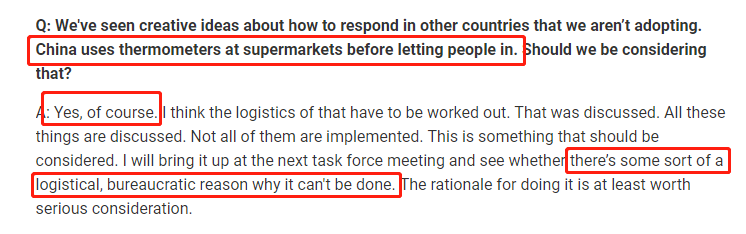

美国确诊增至163例，死亡率远超其他国家，特朗普却这样说……
原文链接 备份链接 据美国《纽约时报》汇总各州公共卫生部门公布的新冠肺炎确诊病例，截至当地时间5日下午，全美已有163例确诊病例，分布在18个州。华盛顿州公共卫生部门5日公布了一例死亡病例，使得全美死亡病例达到了12例。 数据显示，美国 …

当地时间3月22日，美国顶级传染病专家、国家卫生研究院下属国家过敏症和传染病研究所所长安东尼·福奇（Anthony Fauci）接受了《科学》杂志专访，福奇表示，对特朗普有关疫情的某些表态无法认同，他说：“我总不可能跑到麦克风前面，把他推下去吧。他既然已经说了，那就让我们下次尽量作出更正。”

“我总不能跳到麦克风前面把他推下去”
美国国内疫情严峻，白宫已连续多日就疫情举行记者会，每每在记者会现场，特朗普身旁总有一位熟面孔，他正是美国国家过敏症和传染病研究所所长安东尼·福奇。
当地时间3月22日，安东尼·福奇在专访中表示，他对特朗普有关疫情的某些表态无法认同的“无奈”时，他说：“我总不能跳到麦克风前面把他推下去。”

福奇接受《科学》杂志采访
福奇：努力让白宫新冠疫情发布会更具实际意义
福奇在当天的采访中表示，他正在努力让白宫有关新冠肺炎疫情的新闻发布会变得更具有实际意义，同时他也在努力让特朗普就这场“大流行”发表的声明更加基于事实。
在《科学》杂志的采访中，福奇被问到了特朗普此前甩锅中国，声称中国应该提前通报疫情一事。
福奇表示，在特朗普发表那份声明（暗示中国可能在3到4个月前就发现了这种新型冠状病毒）之后，他告诉相关人士，这样不妥，因为（这么算）两三个月前可能就是9月了。等到下次他们坐下来与他（特朗普）讨论他将要说什么时，他们会说，顺便提一句，总统先生，小心点，不要这么说。但我总不能跳到麦克风前面把他推下去。好吧，他还是说了。（只能）让我们试着下次再纠正过来了。

福奇：没说过“中国病毒”，永远不会说！
接着，在被记者问到，“您没有用过‘中国病毒’”，福奇回答说，“永远（不用）。”记者补充：“您永远不会这么说，是吗？”福奇回答：“是的”。

福奇接受《科学》杂志采访
这篇报道在网络上得到大量转发和点赞，然而不少网友表示非常担心福奇的前景，是否因为说了大实话而被特朗普“送下台”。

“福奇博士是唯一为特朗普工作，保持说真话，却还没有被特朗普解雇的人。”
“特朗普现在会试着让福奇消失。”
福奇认可中国防疫举措，称美国应该考虑借鉴
福奇还在采访中对中国的一些防疫措施表示认可。在被《科学》杂志问到美国是否应该效仿中国在超市门口进行体温测量的举措时，福奇表示“是，我们当然应该考虑”。他还表示，他会在下一次疫情工作组的会议上把这件事提出来，看看是什么后勤或官僚主义的原因导致美国现在没有实行这种很值得考虑的措施。

福奇在采访中认可中国防疫举措
福奇：美国检验系统是一个失败
安东尼·福奇是美国免疫学家，担任美国国家过敏和传染病研究所主任。他在对艾滋病和H1N1甲型流感等传染病的研究中作出重大贡献。在美国电视上播出解释有关艾滋病、生物恐怖主义或世界性流感的节目的时候，人们最有可能看到的就是他。
福奇以爱说大实话著名，此前他在美国国会听证会上称“美国检测系统是一个失败”，引起美国社会强烈反应。
美国哥伦比亚广播公司主持人 奥唐纳 ：我想问关于你今天在国会说的话，美国检测系统是一个失败，为什么？
安东尼·福奇：我在听证会提及的是这套检测系统，最早是为医患互动模式而设计的，在这种模式中，出现症状的病人前往医生的办公室或者诊所，病人想要检测是因为接触了病菌或者出现症状。结果送往公共卫生实验室，美国疾控中心进行检测，这个模式的运作没有问题。如果我们要做全面、摸底式的检测来回答大家都想问的问题“美国到底有多少人感染？”，这个检测模式就行不通。
来源：央视新闻


推荐阅读

点击大图 |特朗普连任危矣？

点击大图 |这次美国股灾堪比1929年还是2008年？

原文链接 备份链接 据美国《纽约时报》汇总各州公共卫生部门公布的新冠肺炎确诊病例，截至当地时间5日下午，全美已有163例确诊病例，分布在18个州。华盛顿州公共卫生部门5日公布了一例死亡病例，使得全美死亡病例达到了12例。 数据显示，美国 …
原文链接 备份链接 成为一个国家的 “珍宝” 并不容易，安东尼 · 福西（Anthony Fauci）似乎面对着一个尴尬局面。 安东尼 · 福西博士，现任美国国家过敏症和传染病研究所（NIAID）主任。这位被国内称为 “美版钟南山” 的 …
原文链接 备份链接 事态还在发展，一日多变，州、县、市都发了紧急状态令，3月18日，本地所有餐馆被要求关闭堂吃，一大批员工失业，生计成为问题，政府救济在途。黎明之前将会有一段至暗时刻。我们也只有就地卧倒，保护自己，共渡难关了。 文 | …
原文链接 备份链接 美国约翰斯•霍普金斯大学统计显示，截至当地时间21日13时，美国新冠肺炎确诊病例已超过2万例，死亡278例。三天之内，全美确诊病例从1万例增至2万例。而更有研究分析，美国疫情的峰值最早可能要到5月份才能到来。 美国确 …
原文链接 备份链接 当人类生存的主题被病毒、大流行病裹挟时，在白宫坐镇的特朗普、民间看好的疾病专家安东尼·福西和美联储主席鲍威尔纷纷出招，是老旧的套路还是定海神针，还未可知 文 |《财经》特派记者 金焱 发自华盛顿 编辑 | 苏琦 3 …